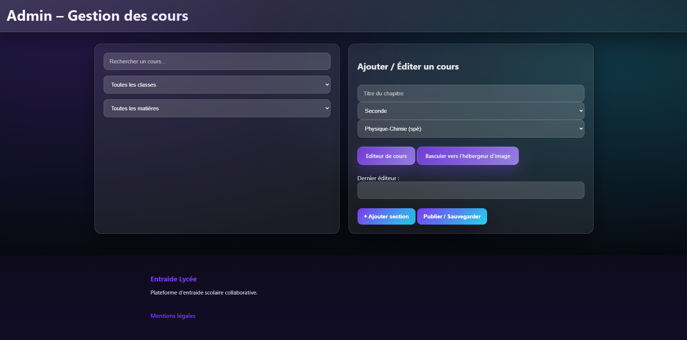
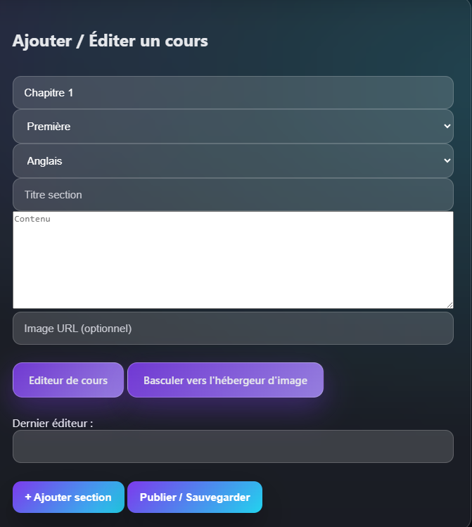
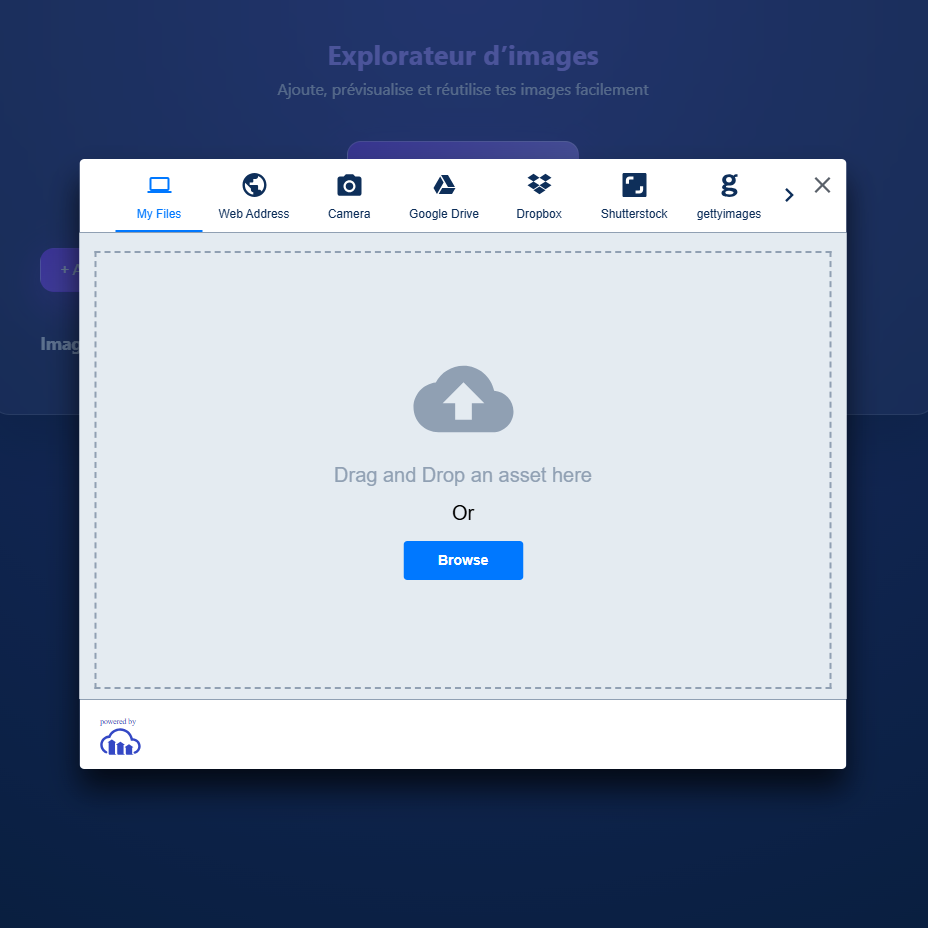
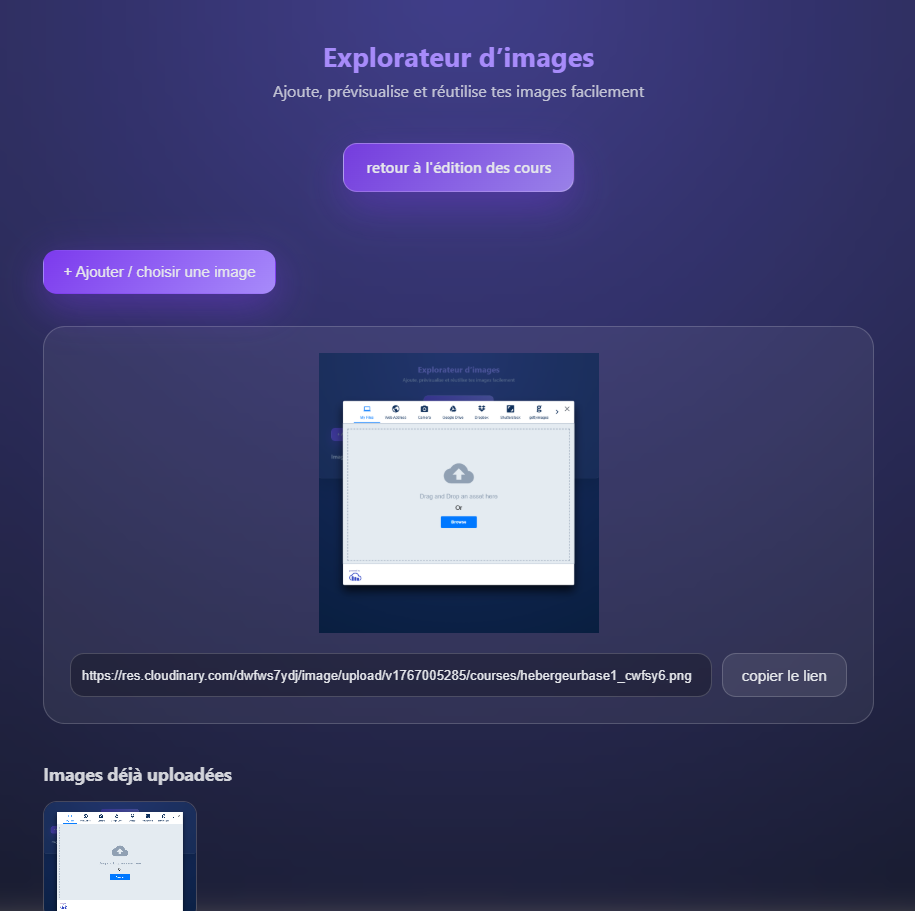
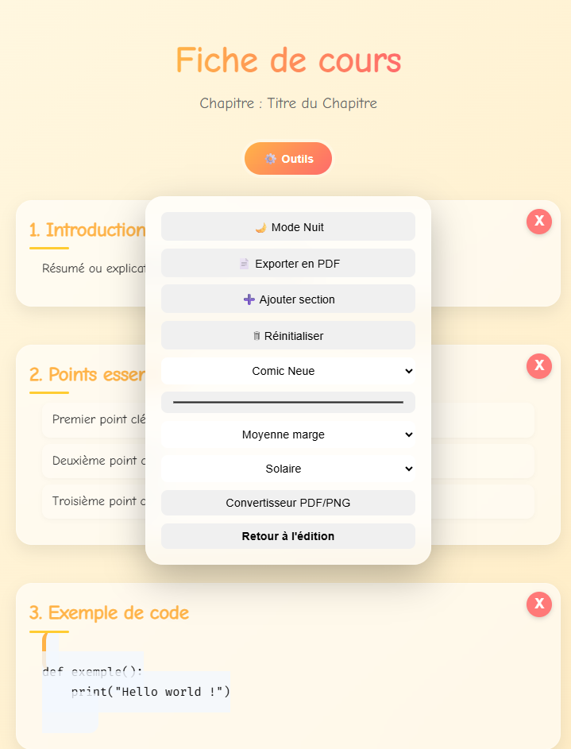
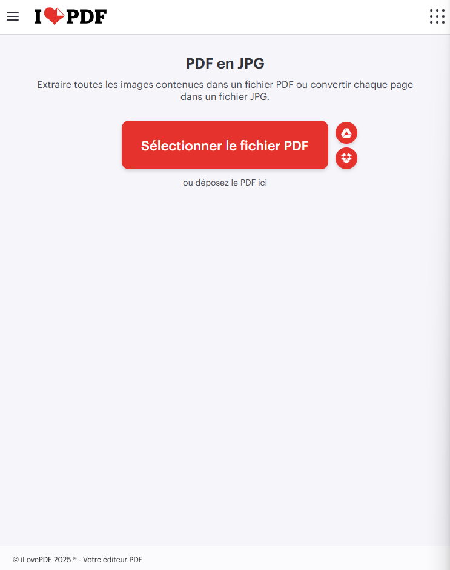

Introduction
Bienvenue dans le guide de l'administrateur. Ce guide vous aidera à gérer et configurer le système d'édition efficacement.
1. Configuration Initiale
 Dans la section "Ajouter/éditer un cours", vous pouvez configurer les paramètres de base du système d'édition. Une "section" est un groupe du cours ou de modules liés contenant : un sous titre ; un champ de texte classique ; un champ url qui vour permettra d'implémenter une image dans votre cours (*voir pt.2). Pour ajouter une nouvelle section, cliquez sur "Ajouter une section",
En bref, une section est un paragraphe.
lorsque vous avez terminé de configurer les sections de votre cours, cliquez sur "Publier/Sauvegarder" pour publier votre cours.
2. Utilisation de l'hébergeur d'image
Via la section : "Ajouter / Éditer un cours" cliquer vous pouvez cliquer sur le bouton "Basculer vers l'hébergeur d'image". vous serez rediriger vers une partie du site qui vous permettra d'attribuer une URL à votre image.
Vous pourrez, à partir de cette interface, ajouter une image, son URL puis la copier via le bouton dédié.
Le lien pourra être copié dans le champ facultatif "URL de l'image" dans l'interface d'édition du cours. De cette manière, celle-ci sera visible sur l'espace "user" dans le cours dédié.
3. Editeur visuel du cours
Via la section : "Ajouter / Éditer un cours" cliquer vous pouvez cliquer sur le bouton "Editeur de cours". vous serez rediriger vers une partie du site qui vous permettra d'intéragir avec une interface visuelle vous offrant une expérience d'édition améliorée et un meilleur contrôle.
Accéder à l'outil toolbar en cliquant dessus. Vous aurez alors la possibilité de ajouter/modifier des éléments de section (tel que la couleur, marge interne, thème de navigation, police d'écriture, etc.).
Via cette même barre d'outils, vous pourrez télécharger votre cours au PDF via le bouton dédié.
Pour vous permettre d'intégrer votre cours édité, vous pouvez cliquer sur le bouton "Convertisseur PDF/PNG". vous serez alors redirigé vers le site : I love PDF qui vous permettra d'obtenir un PNG (image) de votre cours intégrable à l'hébergeur d'image et donc d'obtenir une url pour celle-ci (*voir pt.2) en toute sécurité.
4. Gestion des cours
La section "Gestion des cours" vous permet de visualiser, modifier ou supprimer les cours existants.
Vous pouvez accéder à l'interface de gestion en cliquant sur le bouton "Editer". L'interface se présente de la même manière que celle utilisée pour la création du cours (voir pt1).
5. Edition classique du cours via le champ de texte.
Outre la possibilité d'ajouter des sections via le bouton dédié, vous pouvez aussi simplement utiliser les raccourcis pour vous permettre une édition plus simple.
Voici les raccourcis disponibles :
-
# titre -> Titre
-
## sous-titre -> Sous-titre
-
_texte italique_ -> texte italique
-
**texte gras** -> texte gras
-
[lien](url) -> lien
--- -> retour à la ligne
- texte 1
- texte 2
- texte 1
- texte 2
6. Options avancées.
L'interface d'édition en tant que tel ne vous permet pas d'avoir un réel contrôle de la forme de votre cours. (les retours à la ligne, texte en gras, italique, sections, etc. ne sont pas pris en compte)
Utilisez l'outil à bon escient ! Vous pouvez également ajouter du code HTML et CSS directement dans l'éditeur.
La balise "p" entre chevrons "<>" vous permet de créer un paragraphe.
Avec la balise "a", vous pouvez créer un lien hypertexte. vers une page externe. Notez bien que toutes redirection vers un site malveillant sera sanctionné.
La balise "h1" à "h6" vous permettent de créer des titres de niveaux 1 à 6.
La balise "br" (seule) vous permet de faire un retour à la ligne.
En bref, en utilisant ces balises combiné au CSS, vous pourrez structurer votre contenu d'avantage, modifier l'apparence de la page de cours et leur donner une vrai personnalité ! (créer une section, modifier la couleur d'arrière plan, les boutons, etc.)
Même si l'insertion de code JavaScript, ou tout autre langage executable est impossible, veillez à ne pas tenter d'insérer de code malveillant sous peine de banissement de la Plateforme.